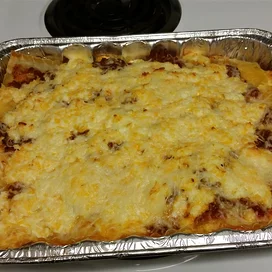

Brenda's Lasagna

Faster and less expensive lasagna
This lasagna takes 1 hour to make and yields 8 servings
- 1 package of lasagna noodles
- pound of ground beef
- Salt and pepper
- 4 1/2 dl of Spaghetti sauce
- 1 glove of garlic minced
- 250g of shredded mozzarella
- 250g of shredded cheddar
- 5 dl of ricotta cheese
- Bring a large pot of lightly salted water to a boil. Add pasta and cook for 8 to 10 minutes or until al dente; drain.
- Preheat oven to 175 degrees C. In a large skillet over medium-high heat, brown beef and season with salt and pepper; drain. Stir in spaghetti sauce and garlic and simmer 5 minutes.
- In a medium bowl, combine mozzarella, Cheddar and ricotta; stir well. In 9x13 inch pan, alternate layers of noodles, meat mixture and cheese mixture until pan is filled.
- Bake in preheated oven for 30 minutes, or until cheese is melted and bubbly